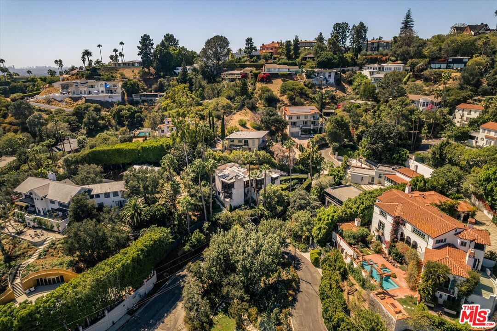
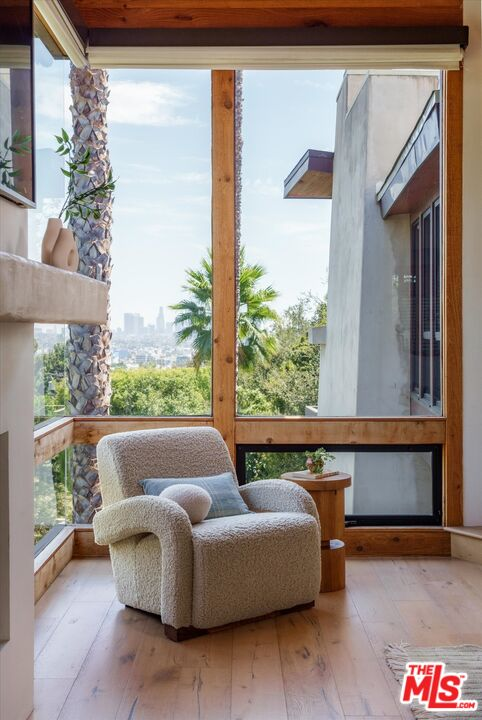
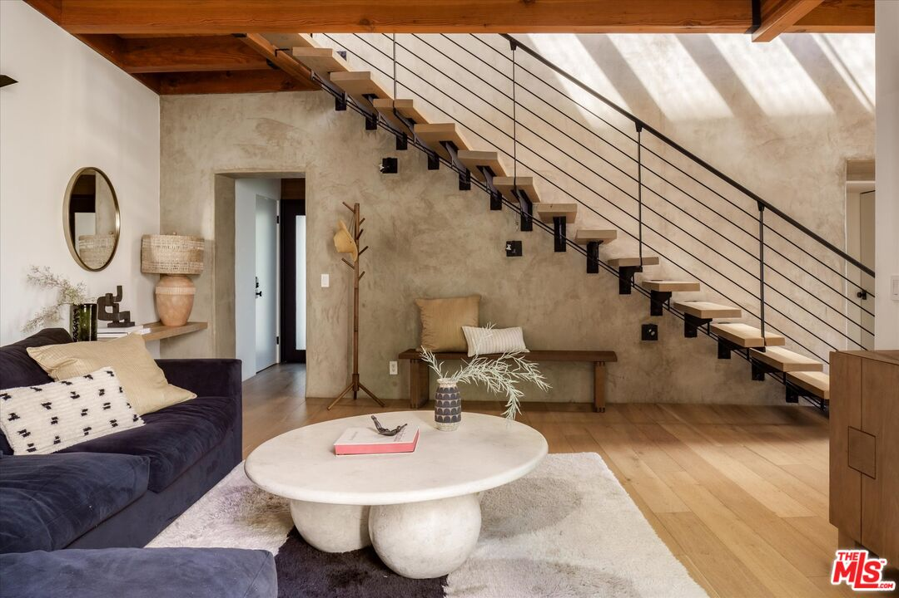
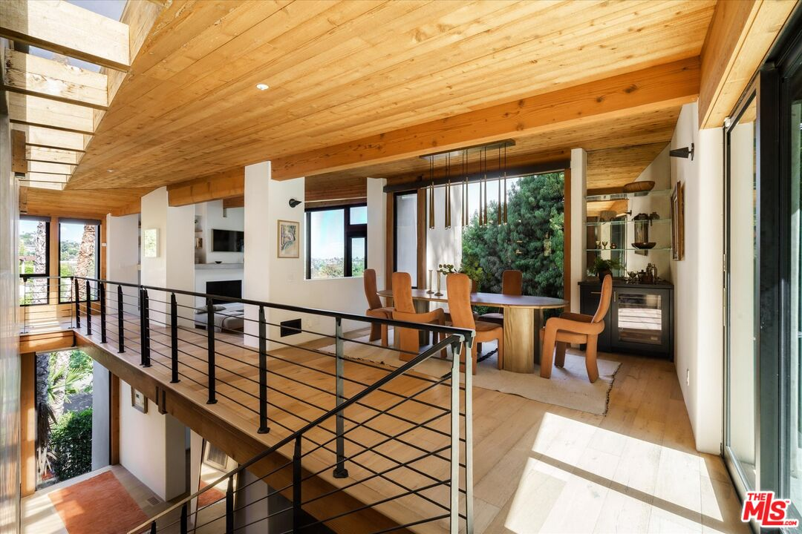

Obsession No. 014Los Feliz · Los Angeles
2165
Ponet Dr
There's a chair tucked right into the corner of floor-to-ceiling glass where the whole downtown skyline shows up past the palm trees, and I sat there longer than I probably should have on the walkthrough.
Why it made the edit
“I sat there longer than I probably should have, just watching the light change over the concrete and the wood beams.”
This one made the list for that corner. There's a chair pulled right up into a wall of glass where you can see straight to the DTLA skyline past the palm trees, and I ended up sitting there far longer than I needed to, just watching the light change over the concrete and the wood beams overhead.
William Adams Architects designed the house in 2000, gated and set into the same Los Feliz hillside as some of the city's best known modern builds, and the floating staircase cutting through the middle of it, wood treads suspended off black steel rails with nothing solid underneath, is the kind of thing you notice the second you walk in.
Upstairs the main living space opens under a wood-beamed ceiling with the skyline picking back up through another wall of glass by the dining table, and downstairs it's a chef's kitchen, a primary suite with its own spa tub, three bedrooms and three baths across 2,749 square feet, plus a heated pool and spa tucked into the hillside lot behind the gate.
It's a different kind of house than the ones I usually fall for, more modern than my typical old-bones obsession, but that view earned it a spot anyway. If a corner like that is worth building a whole house around for you too, let's talk.



Want to see it in person?
Curious about this one?
Let’s talk.
Listed by Rob Kallick & Sara Kaye, Compass. House of Zonshine does not represent this listing. Property details are from listing information and public sources and should be independently verified.